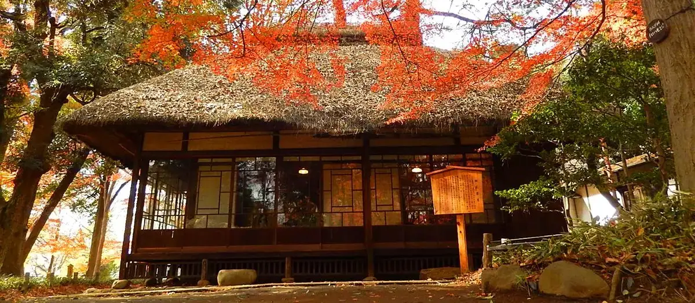
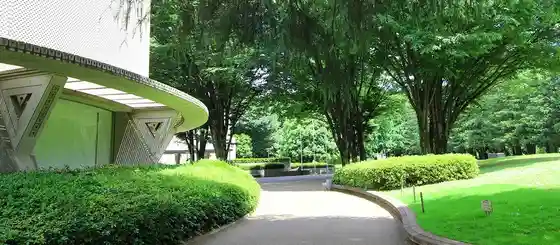
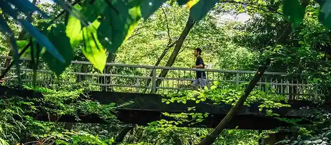

Setagaya, Tokyo: things to do, food and stays
Setagaya · Tokyo
Setagaya
Highlighted on the Tokyo map.

Sights
Roka Tsune Haru Sono
Setagaya Art Museum

Kinuta Park

The Gotoh Museum
Museum of Zen Culture and History, Komazawa University
Setagaya Literary Museum
Shimotakaido Shinema
Soshigaya Park
Kagawa Toyohiko Memorial Matsuzawa Museum
Shimokitazawa Toriuddo
Hanegi Park
Sazae San Dozo
Futagotamagawa Park
Kaminoge Nature Park
Dining
Sushi Nishizaki
鮨 西崎

Seafood restaurant in Setagaya, Tokyo.
Ozasa Hisashi Shi
小笹寿し

Seafood restaurant in Setagaya, Tokyo.
Yakitori shira
やきとりshira

Meat restaurant in Setagaya, Tokyo.
Pepe Rosso Reservation
ペペロッソ

European restaurant in Setagaya, Tokyo.
L'atelier de Plaisir
ラトリエ ドゥ プレジール

Sweets and bakery shop in Setagaya, Tokyo.
Kalpasi

Chinese or Asian restaurant in Setagaya, Tokyo.
Boulangerie Sudo
ブーランジェリー スドウ

Cafe in Setagaya, Tokyo.
Ryoura
リョウラ

Sweets and bakery shop in Setagaya, Tokyo.
Ramen MAIKAGURA
らーめんMAIKAGURA

Noodle restaurant in Setagaya, Tokyo.
Au Bon Vieux Temps Oyamadai ten
オーボンヴュータン 尾山台店

Cafe in Setagaya, Tokyo.
Chuka Soba Nishikawa
中華そば 西川

Noodle restaurant in Setagaya, Tokyo.
Patisserie Yu Sasage
パティスリー ユウ ササゲ

Sweets and bakery shop in Setagaya, Tokyo.
Maeshiba Ryori Ten
前芝料理店

European restaurant in Setagaya, Tokyo.
Curry Spice Gelateria KALPASI

Sweets and bakery shop in Setagaya, Tokyo.
PATISSERIE ASAKO IWAYANAGI

Cafe in Setagaya, Tokyo.
Sosaku Curry MANOS
創作カレー MANOS

Japanese restaurant in Setagaya, Tokyo.
Kyu Yamu Tei Shimokita sou
旧ヤム邸 シモキタ荘

Chinese or Asian restaurant in Setagaya, Tokyo.
kitchen and CURRY
キッチン アンド カリー

Japanese restaurant in Setagaya, Tokyo.